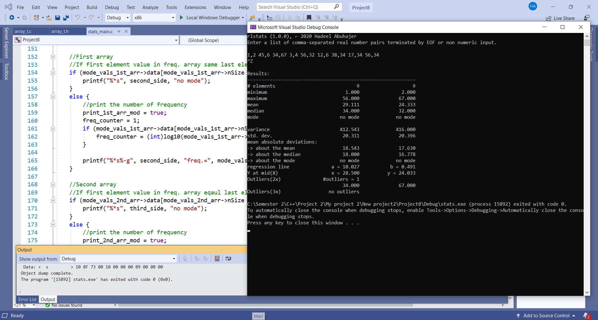
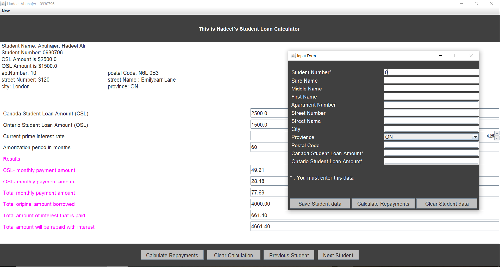

General information
I have studied various courses such as Java, C, C++, Java script, HTML & CSS and Data Base. I also have used them to make several projects. I will present two of them using C and Java.
Experience C++
The program will compile the following statistics on a list
of real number pairs:
minimum value-maximum value - median value
- arithmetic mean-mean absolute deviation –
(mean, median, mode) - variance - standard
deviation -least squares regression line - outliers.

I used cpp reference website to help me in C & C++.
Experience Java

This program is GUI student loan calculator app.
it lets student see how modifying their repayment
schedules would affect the loan cost in terms of the
amount of interest that the student would pay.